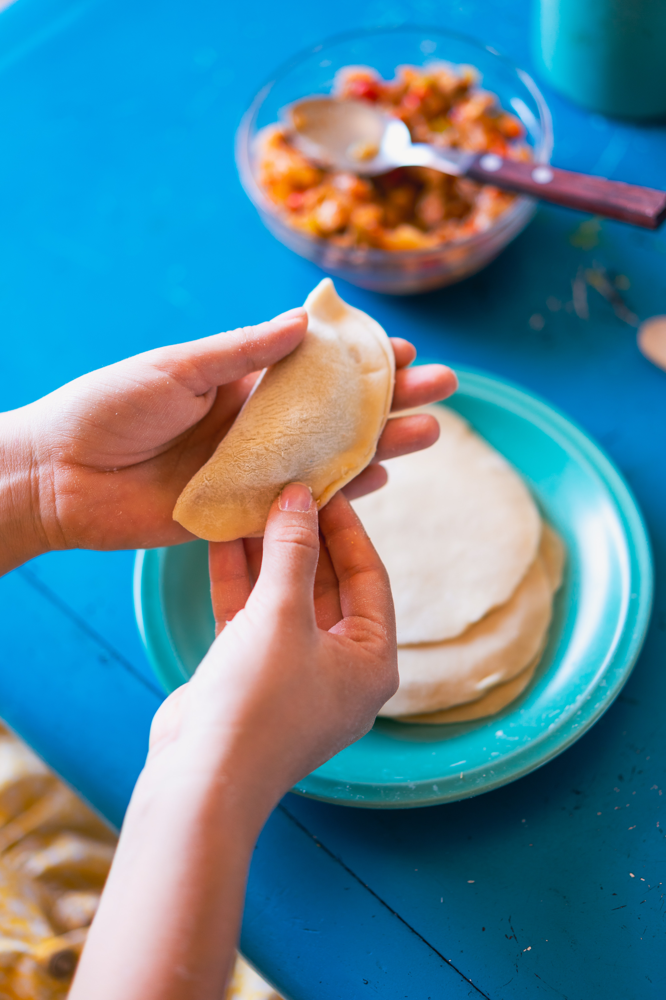
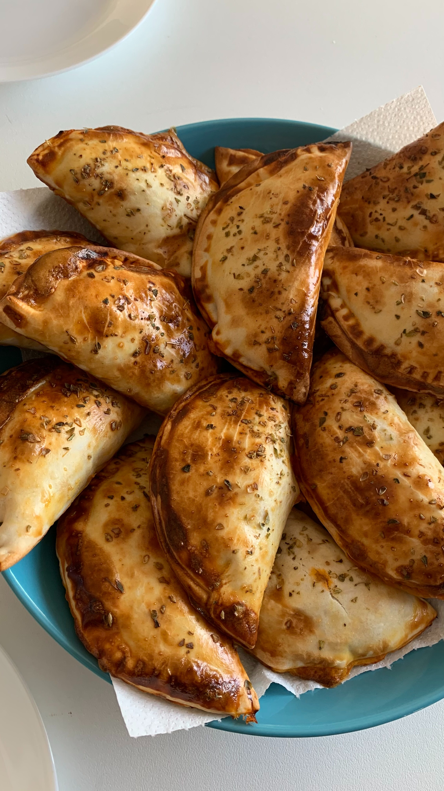
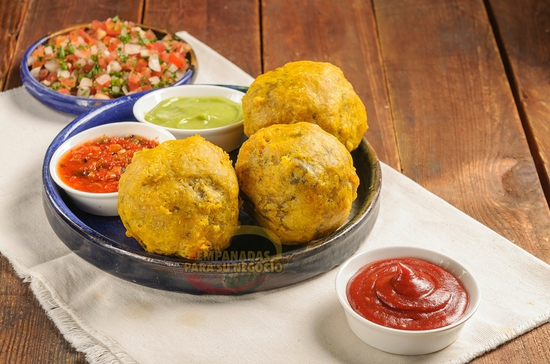
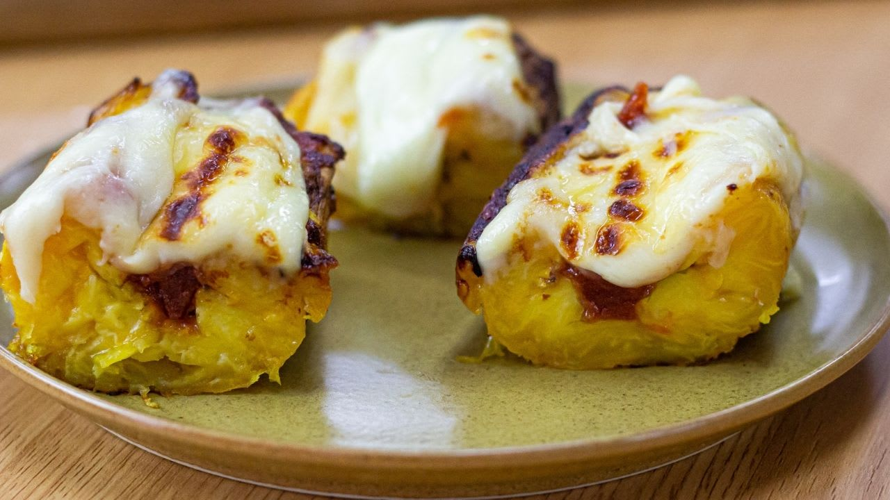
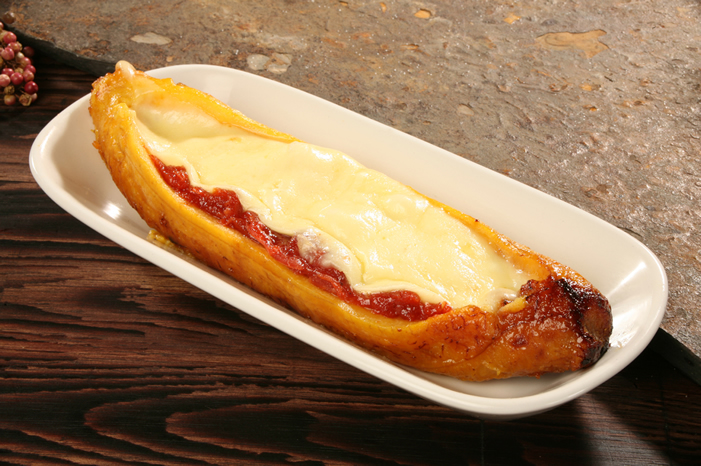

Empanadas


Empanadas.
Ingredientes:
- 1 ½ tazas de harina de maíz precocida amarilla (Masarepa)
- 2 tazas de agua
- 1 cucharada de aceite vegetal
- ½ cucharada de sazón con azafran
- ½ cucharadita sal
Relleno
- tazas de papas blancas peladas y partidas en cubos
- 1 tableta de caldo pollo o vegetales
- 1 cucharada de aceite de oliva
- ¼ taza de cebolla blanca picada
- 1 taza de tomate picado
- ½ cucharadita de sal
- ¼ taza de cebolla larga picada
- 1 diente de ajo picado
- 2 cucharadas de cilantro fresco picado
- 2 cucharadas de pimenton rojo picado
- ½ libra de carne molida de cerdo y carne de res
- ¼ cucharadita pimienta negra
- Aceite vegetal para freír
- Limón y ají para servir
- Coloca la Masarepa en un tazón grande . Añada el sazón , la sal y revuelva para mezclar bien. Agregue el agua , el aceite y mezclar hasta formar la masa . Forma la masa en una bola y amasar durante 2 minutos o hasta que esté suave. Cubrir con plástico y dejela reposar por lo menos 20 minutos
- Mientras tanto, para hacer el relleno , cocinar las papas en una olla con agua y la pastilla de caldo durante 20-25 minutos o hasta que las papas estén suaves . Escurrir y triturarlas un poco. Reservelas para usar despues.
- Calentar 1 cucharada de aceite de oliva en una sartén grande. Agregue la cebolla y cocine a fuego medio-bajo revolviendo con frecuencia , durante 5 minutos. Añadir los tomates , la cebolla larga , ajo , pimentón, cilantro , sal y pimienta negra . Cocer durante unos 15 minutos.
- Agregue la carne molida de cerdo y carne de res. Cocina, rompiendo la carne con una cuchara de madera, durante 10 a 15 minutos o hasta que la mezcla este seca. Transfiera la mezcla de carne a la mezcla de puré de papas y mezcle bien todo.
- Romper pequeñas porciones de la masa , aproximadamente de 1 ½ cucharadas cada una, y formar cada porción en una bola con las palmas de sus manos.
- Coloque las bolas de masa entre dos pedazos de plástico y aplástelas con las yemas de los dedos para formar un círculo o puede usar un rodillo si prefiere. Retire la tapa de plástico y coloque 1 cucharada de relleno en el centro de cada circulo .
- Luego, utilizando el plástico debajo, doble la masa para encerrar el relleno , formando un medio círculo. Sellar herméticamente los bordes con los dientes de un tenedor o con los dedos.
- Llene una olla grande con aceite vegetal y calentar a fuego medio a 360 ° F.
- Con cuidado, coloque 3 o 4 empanadas en el aceite caliente y freír durante unos 2 minutos hasta que se doren por todos los lados .
- Con una cuchara ranurada transferir las empanadas a un plato cubierto con toallas de papel. Sirva con ají y limón.
Preparación de la masa
Papas


Papas rellenas.
Ingredientes:
- Aceite vegetal para freír
- 5 papas medianas
- ½ de cucharadita de sal
- 1 cucharada de aceite de oliva
- 1 taza de tomate picado
- ⅓ taza de cebolla picada
- ⅓ taza de cebolla larga picada
- 1 diente de ajo picado
- ½ cucharadita de comino molido
- ½ cucharadita de Sazón con azafran
- ¼ de cucharadita de sal
- ¼ cucharadita de pimienta molida
- ½ libra de carne molida
- 1 huevo
- Una pizca de sal
- ½ cucharada de Sazón con azafran
- ¼ de taza de leche
Relleno de carne
Colada
- Pelar las papas y cortarlas en trozos, pongalas en una olla mediana y cubrir con agua y agregar un ½ de cucharadita de sal.
- Lleve las papas a hervir a fuego medio-alto, y luego baje el fuego a medio y cocine hasta que las papas esten blandas unos 20 minutos.
- Escurrir las papa y machcarla como para purué con un tenedor o machacador y reservar.
- Preparar el relleno, en una sartén grande, caliente 1 cucharada de aceite de oliva a fuego medio y agregue la cebolla, el tomate, la cebolla large, el ajo, el comino, el azafran, la pimienta y la sal. Cocine por 5 minutos o hasta que la cebolla esté transparente, añadir la carne y cocine revolviendo ocasionalmente unos 10 -15 minutos. Deje enfriar.
- Para hacer la colada: En un tazón mezcle todos los ingredientes y batir hasta que la mezcla quede suave y reservar.
- Divida el puré de papa en 10 porciones de igual tamaño, aproximadamente 1/ 3 de taza cada uno, darle forma de bola y con los dedos haz un orificio y coloque 1 ½ cucharadas de relleno en el orificio. Tapa el orificio con un poco más de puré, para encerrar el relleno por completo. Repite el procedimiento con el resto de las bolitas.
- Llene una olla grande y pesada con aceite vegetal y caliente a fuego medio-alto a 360 ° F.
- Sumerja las papas rellenas en la colada y colóquelas con cuidado en el aceite caliente y freír durante unos 4 minutos o hasta que esté doradas. Retire las papas del aceite y escurrir en un plato con papel de cocina. Pasar a un plato y servir con Ají.
Preparación de la masa
Platanos


Platanos con bocadillo y queso.
Ingredientes:
- 4 plátanos bien maduros
- 1 cucharada de mantequilla derretida
- 4 rebanadas de bocadillo de guayaba
- 4 rebanadas de queso mozzarella o queso blanco
Preparación.
- Precaliente el horno a 400 °, pelar y cortar los extremos de los plátanos .
- Colocarlos en una lata de hornear y ponerles mantequilla, hornear durante 30 a 40 minutos.
- Retirar del horno y cortar los plátanos a lo largo, rellenarlos con las rodajas de bocadillo y queso.
- Ponerlos de nuevo en el horno y hornear 10 minutos más hasta que el queso se derrita y servir.